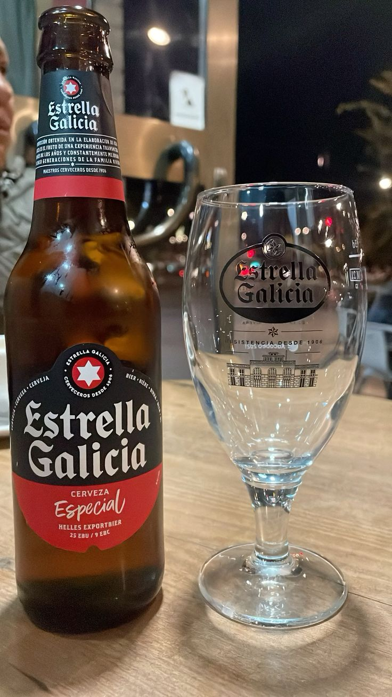

Alhambra Reserva 1925: La mítica . Es la cerveza premium por excelencia en el tapeo ilicitano. Su botella verde sin etiqueta es un icono y su color ámbar dorado encaja perfecto con tu estética.

Estrella Galicia (Especial o de Bodega): Es, ahora mismo, la favorita en la mayoría de barras de Elche por su sabor equilibrado. En sitios como El Garaje o Vino y Más la cuidan muchos
Alhambra Reserva 1925: La mítica . Es la cerveza premium por excelencia en el tapeo ilicitano. Su botella verde sin etiqueta es un icono y su color ámbar dorado encaja perfecto con tu estética.

1906 Reserva Especial (La Colorada): Muy común en El Granaino o El Palmeral. Es una cerveza con más carácter, más tostada y con un tono cobrizo que visualmente es muy potente.

Victoria Málaga: Ha entrado con muchísima fuerza en los bares de la zona últimamente. Es una lager muy refrescante, ideal para el clima de Elche y para acompañar las tapas de Salvador o Paquita's.